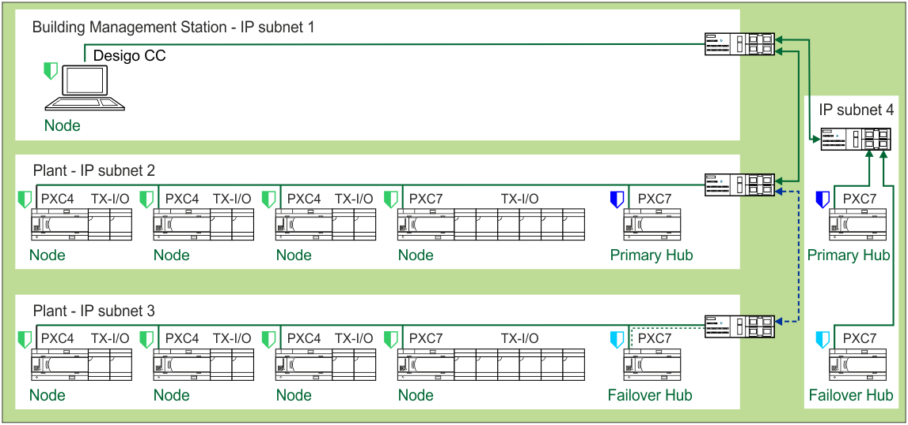
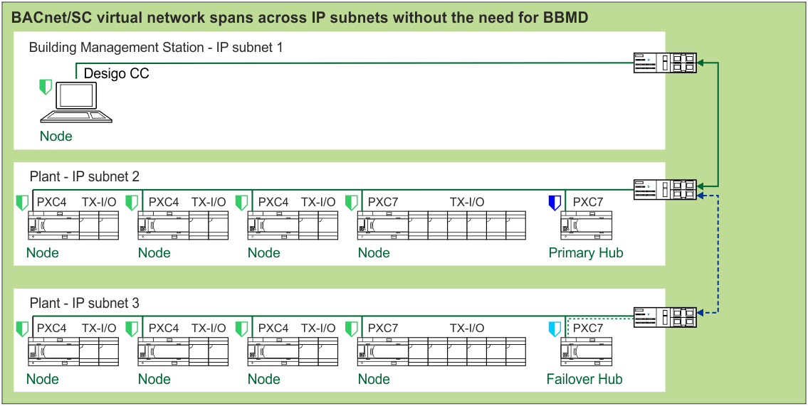

物理网络拓扑
物理网络拓扑是指设备如何使用布线在网络上进行物理连接。 BACnet/SC 使用与 BACnet/IP 相同的物理层 – 以太网布线。区别仅在于逻辑操作 - 设备如何基于固件中的 BACnet/SC 函数在网络上运行。用于 BACnet/IP 的相同物理拓扑也可用于 BACnet/SC 网络。底层IP网络的布线可以自由配置。它可以是星形、总线、菊花链或任何其他以太网拓扑。
BACnet/SC 是一种 IT 友好协议，非常适合在 IT 环境中使用。 IT 专业人士强烈喜欢星形拓扑以太网连接（从设备到交换机的全垒打），因为故障风险要低得多，不会出现网络环路，并且可以使用 IT 管理技术在网络上阻止单个设备。楼宇自动化专业人员可能更喜欢菊花链或冗余环以太网拓扑，因为它具有成本效益且独立。对于 IT 和 OT 专业人员来说，在项目早期进行协作并决定要使用的物理拓扑非常重要。
BACnet/SC 设备的菊花链仅适用于节点设备。集线器设备绝不能采用菊花链方式。为了保持性能，同一网段上不应以菊花链形式连接超过 20 个 BACnet/SC 节点设备。
商业楼宇自动化项目中使用了大量已安装的 BACnet/IP 设备。混合 BACnet 网络（混合使用 BACnet/IP 和 BACnet/SC 数据链路）需要像不安全的 BACnet/IP 网络一样对待。只有使用 BACnet/SC 虚拟链路层的网段才具有集线器和节点设备的安全通信和身份验证。

不建议 PXC7 主集线器和故障转移集线器设备采用菊花链拓扑。 BACnet/SC 集线器设备必须始终在网络上可访问，否则 BACnet/SC 通信将失败！强烈建议使用星形拓扑（本垒打）连接到以太网交换机或 IP 路由器。 BACnet/SC 节点设备可以根据以下设备限制准则进行菊花链连接。

或者，集线器设备可以是菊花链拓扑中的第一个设备，具有与以太网交换机或 IP 路由器的主运行连接。
